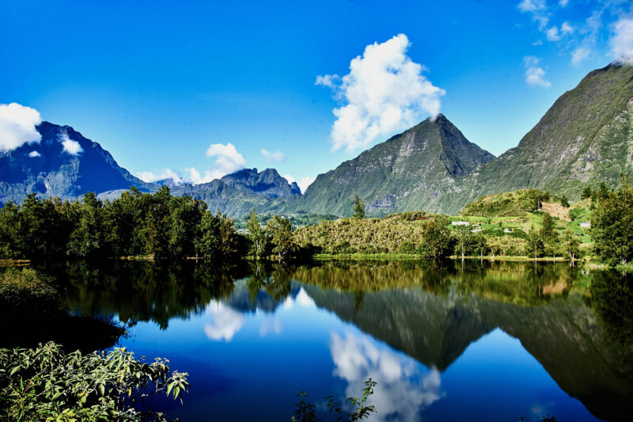
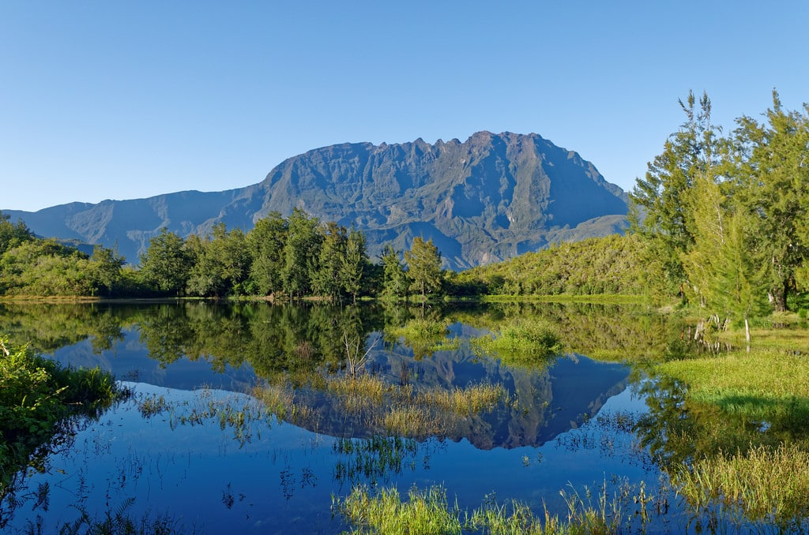
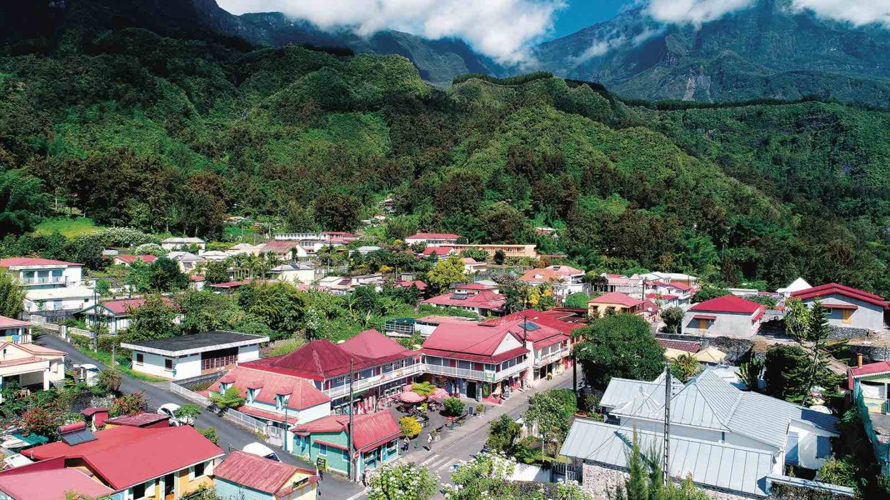
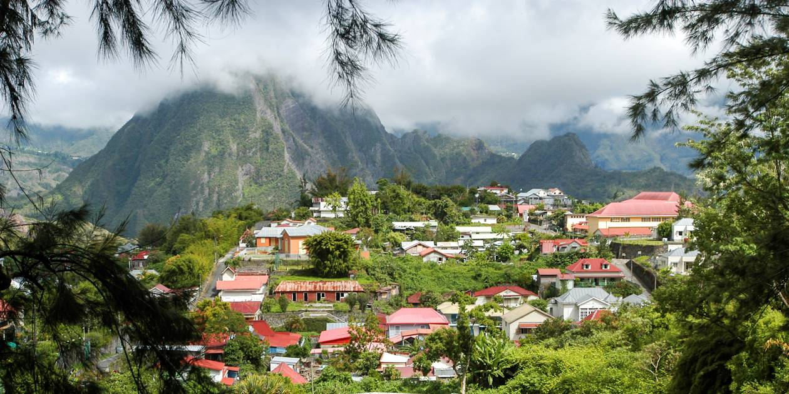

Appréciez les charmes de Salazie, le poumon vert de l’île pour vous ressourcer et admirer la nature qui nous entoure. Partir tôt en voiture de location à la découverte de Salazie, le plus accessible et le plus vaste des 3 cirques de La Réunion. Eviter ainsi les embouteillages. De Saint-Denis, cap à l’est par la RN2. 50 min suffisent pour traverser les grandes exploitations de cannes à sucre qui plongent dans l’océan Indien, contourner Saint-André et attaquer, en longeant la Rivière du Mât, les premiers lacets de l’étroite route (RD 48) qui grimpe au village de Salazie. Le chef-lieu du cirque éponyme s’est développé entre collines humides, plateaux verdoyants et ravines profondes (état des routes, Tél : 02 62 97 27 27).

Le cirque de Salazie
Depuis les plages de la côte ouest, compter 30 min supplémentaires, via les routes des Tamarins et du littoral. Quelques virages avant Salazie, la cascade Pisse en l’air, marque symboliquement (en arrosant… le toit de votre véhicule) l’entrée dans ce cirque qui n’est que cascades vertigineuses, torrents impétueux, vallées encaissées sèches ou luxuriantes, qu’une cinquantaine de kilomètres de sentiers balisés permettent de parcourir ou d’approcher


